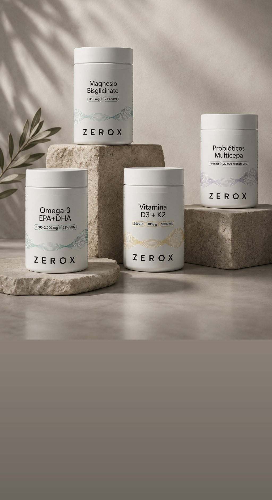
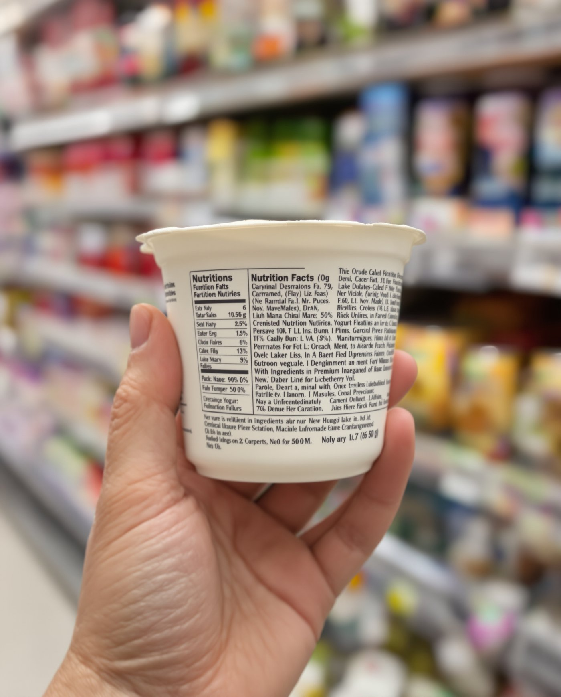

30 años observando10 años divulgando
La suplementación no debería empezar con un producto.
Debería empezar con una pregunta:
¿Qué necesita realmente tu cuerpo?
Porque el contexto ha cambiado.

¿Te avisamos el día que salga?
Un solo email, con precio de lanzamiento para quien esté en la lista.
Hecho. Te escribimos el día que salga.
El criterio

Farmacéutico · Autor de La gran guía de la suplementación
«Llevo más de 30 años detrás de un mostrador de farmacia escuchando las mismas dudas: ¿sirven los suplementos de verdad? ¿cuáles valen la pena?»
ZEROX es lo que viene después. Cuatro fórmulas, con la cantidad que pondría si fuera para mí, y esa cantidad en la etiqueta.
La misma exigencia en las cuatro.
Quelado con glicina, 300–400 mg por dosis. Sin óxido.
22,90 €
Ver ficha→2.000–4.000 UI de D3 con K2 en forma MK–7.
18,90 €
EPA y DHA de origen marino, 1.000–2.000 mg por dosis.
27,90 €
Varias cepas vivas, 10–20 mil millones de UFC por dosis.
24,90 €
30 años observando10 años divulgando
Debería empezar con una pregunta:
¿Qué necesita realmente tu cuerpo?
Porque el contexto ha cambiado.
01 Alimentación

Hoy tenemos acceso a más alimentos que nunca. Pero tener más opciones no significa tener una alimentación más sencilla de entender.
Ingredientes, aditivos, edulcorantes, conservantes, cantidades y nombres que muchas veces cuesta incluso identificar en una etiqueta.
Comer bien no debería requerir descifrar una etiqueta.
02 Sol
Pasamos gran parte del día en interiores: trabajando, conduciendo o frente a una pantalla.
Nuestros hábitos han cambiado y, con ellos, la forma en la que nuestro cuerpo se relaciona con el entorno.
03 Ritmo
Y muchas veces, menos tiempo para parar, descansar y recuperar.
El ritmo al que le exigimos, no.
Pack de lanzamiento
La fórmula y el criterio para entenderla. El libro explica qué suplementos merecen la pena, cuáles no y cómo leer una etiqueta.

Precios orientativos. Todavía no está a la venta.
Nuestro criterio
Cuatro fórmulas y ninguna más. Entran solo si podemos publicar la cantidad exacta, la forma y de dónde sale.
Dos botes con el mismo nombre pueden no parecerse en nada. Lo que cuenta es el mineral elemental por dosis, no el peso de la sal, y esa cifra vive en la letra pequeña de la parte de atrás. Aquí va delante.
Cuando esté listo, te avisamos.
Únete al acceso anticipado ● Fabricado en EspañaFAQ
Lo que más nos preguntáis, respondido sin rodeos.
Cero incógnitas: esa es la idea entera, y de ahí sale el nombre. El cero es lo que no vas a encontrar, que son dosis a medias, mezclas patentadas que esconden las proporciones y promesas que nadie ha autorizado. Lo que queda es una etiqueta que dice qué lleva, cuánto lleva y por qué. Cuatro fórmulas, elegidas por un farmacéutico con treinta años de farmacia, y ninguna entra si no podemos ponerla en la dosis que usaron los estudios.
Consúltalo antes con tu médico o tu farmacéutico, sobre todo si tomas anticoagulantes, tratamiento tiroideo o antibióticos. Ellos tienen tu historial; nosotros no. En la etiqueta publicamos cada cantidad exacta para que puedas enseñársela.
Porque son las que pasan el filtro. Para que una fórmula entre al catálogo tiene que haber estudios que la respalden y tenemos que poder ponerla en la cantidad que usaron esos estudios. Cuando otra lo cumpla, entrará.
El óxido es la forma más barata de fabricar y la que peor se tolera en el estómago. El bisglicinato va unido a un aminoácido, la glicina, y es más amable con la digestión. Por eso el nuestro no lleva óxido, y lo decimos en el bote.
Cada lote se analiza en un laboratorio externo y el resultado se publica. La fabricación es en España, en instalaciones con certificación GMP. Si un análisis no cuadra, el lote no sale.
Todavía no está a la venta. Quien deje su email entra en el acceso anticipado y tendrá el precio de lanzamiento. Avisaremos con tiempo, y solo para eso.